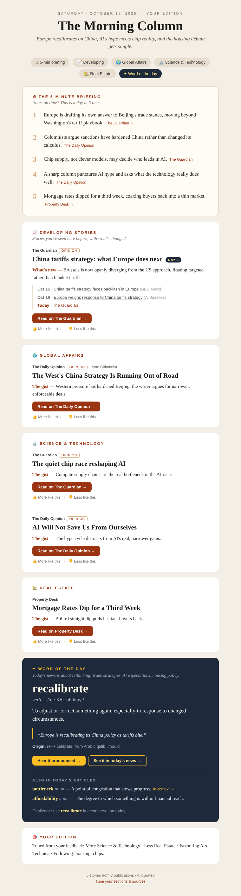

I wanted a morning read that felt like a good newspaper: sharp opinion columns and analysis rather than breaking-news churn, on the three things I actually follow (global affairs, science and technology, and real estate). Every app I tried either wanted a subscription, buried the good pieces under paywalls, or optimised for engagement rather than for me. So I built The Morning Column.
What Lands in the Inbox

- ⏱ The 5-minute briefing. Five one-line summaries at the top, each linking to its article.
- 📈 Developing stories. Stories that continue coverage from earlier days, with a "Day N" badge, a line on what's new, and a timeline of the earlier pieces.
- 🌍 🔬 🏡 Sections. Two picks each, with a one-line "The gist".
- ✦ Word of the day. Taken from the day's articles and chosen to fit the main theme. Words never repeat.
- 🎯 Your edition. 👍 / 👎 on every story, and a box showing how the edition is currently tuned.
The Pipeline
It's a small Python package that runs once a day on GitHub Actions:
feedback emails (IMAP) ──► learned preferences ─┐
RSS feeds ──► fetch ──► skip already-sent ──► score (keywords, freshness, opinion boost,
your preferences, developing-story boost)
──► developing stories + sections ──► (optional) LLM: briefing, gists, updates, words
──► HTML email ──► Gmail SMTP ──► remember what was sent (state.enc)Ranking Without a Model
The core ranking is deliberately simple and works with no LLM at all. Each story is matched to a section by keyword hits, then scored by relevance, section weight, freshness (which halves after a day) and a boost for opinion pieces, so columns float above straight news:
relevance = base + hits.get(s.section, 0)
weight = sections[s.section].get("weight", 1.0)
freshness = 1.0 / (1.0 + age_h / 24) # halves after a day
s.score = relevance * weight * freshness * (opinion_boost if s.opinion else 1.0)Picking the top stories per section also prefers a mix of publications, so one prolific feed can't take over a section.
Following a Story Across Days
The part I'm happiest with is developing stories. Each headline is reduced to its distinctive words (four letters or more, minus a stopword list), and today's headlines are compared with everything sent in the last 21 days. Two headlines belong to the same thread if they share at least two distinctive words, covering at least 40% of the shorter one:
def similar(a: set[str], b: set[str]) -> bool:
shared = a & b
return len(shared) >= 2 and len(shared) / max(min(len(a), len(b)), 1) >= 0.4A match joins the most recent matching thread, so the timeline stays coherent, and continuing stories get a score boost. It's crude next to embeddings, but it's transparent, needs no API, and it's surprisingly good at catching "the same story, a day later".
Learning From a Thumbs Up
There's no server, so how does a static email learn what I like? Each 👍 / 👎 link is a mailto: that opens a pre-filled email to myself with a tag and the story's ID in the subject. I hit send. The next morning's run reads those emails over IMAP and nudges three kinds of weight:
- Section weights move by 0.15 per vote, clamped to 0.5–2.0.
- Publication weights move by 0.1, clamped to 0.6–1.6.
- Topic words from the headline gain or lose affinity, capped so one vote can't swing a story too far.
The clamps matter: without them, a few enthusiastic votes in a week would turn the digest into a single-topic feed.
Free All the Way Down
- Sources without paywalls: The Guardian, The Independent, The Conversation, Al Jazeera, NPR, ProPublica, Ars Technica, Quanta Magazine, Rest of World and Calculated Risk. A
blocked_domainslist drops links to paywalled sites even when a free feed points to them. - Free models, optional: with an OpenRouter key, a free model writes the briefing, gists, developing-story updates and word picks, falling back through a list of other free models. Without one, everything still works on keyword ranking.
- Free compute: a GitHub Actions cron at 11:07 UTC, about 7am in New York.
Private Data in a Public Repo
The repo is public, but reading habits are personal. SMTP login, recipient and API keys live in credentials.enc, encrypted with Fernet (AES + HMAC). The digest's memory (stories sent, learned preferences, processed feedback, used words) is encrypted with the same key and saved to a separate digest-state branch after each run. The only secret in GitHub is the one decryption key.
What I Took Away
The simplest pieces carried the most weight. Keyword scoring with a freshness decay, word-overlap threading and a bounded feedback loop add up to something that feels personal, and the LLM is a layer on top rather than the foundation. If the free model is down, I still get my paper.
The code is on GitHub: rachmurali02/news-aggregator.